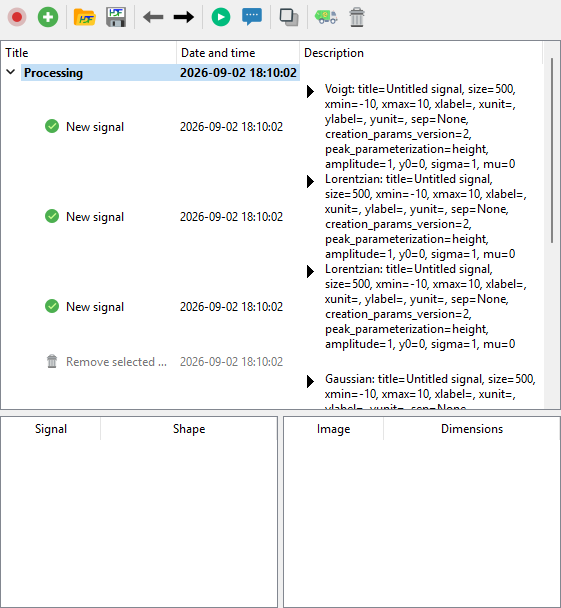

History Panel#
Overview#
The “History Panel” records the sequence of actions performed by the user on signals and images, organized into sessions. Each session is a chronological list of either:
UI actions (creating a new signal, removing selected objects, saving the workspace to HDF5, …),
computations (FFT, average, Gaussian fit, …) dispatched by the DataLab processors to Sigima, or
mutations (in-place modifications of existing objects, such as editing regions of interest). See Object mutations.
A recorded session can be:
Replayed silently or step by step. Replaying recomputes each computation action in place with its recorded parameters: existing output objects are updated, and deleted outputs whose action is still part of the history are re-created under their original identifiers, keeping the downstream processing chain valid. In step-by-step mode, parameters may be reviewed and edited before each step is recomputed. Recorded UI actions are invoked through their own methods and may reproduce their side effects, including creating, importing, or duplicating objects;
Duplicated as independent processing chains in new history sessions, with the required signal/image objects cloned as part of the operation;
Saved to a standalone history file (
.dlhist) or embedded in the workspace when saving to HDF5, so that the full processing chain travels with the data.

The History Panel after recording a representative session: create three signals (Voigt, Lorentzian, Lorentzian), remove one of them, create a Gaussian signal, compute the average, add Gaussian noise to the result and run a Gaussian fit.#
Object mutations#
Besides UI actions and computations, the panel records mutations: in-place modifications of existing objects that do not create new ones. Mutations currently cover regions of interest (ROI): defining or editing ROIs graphically or numerically, deleting one or all ROIs, and pasting ROIs each record a single generic mutation entry holding the affected objects and the resulting ROI state.
Replaying a mutation re-applies the recorded ROI state to its target objects (an empty state removes the ROIs). In step-by-step mode, the ROI parameters can be reviewed and edited in a dialog before being re-applied; editing them triggers a recompute of the downstream dependent computations.
When a recomputed action re-creates or updates an object, the mutations recorded on that object are re-applied in order, and analyses depending on the mutated object are recomputed. User ROIs present on an output object are preserved by in-place recomputes, unless the recompute itself produces a ROI.
Mutation entries are saved with sessions (standalone .dlhist files and
HDF5 workspaces) like any other action; history files created with earlier
versions of DataLab load unchanged.
Recording and session lifecycle#
Actions are recorded only while Record mode is enabled. Turning record mode off preserves existing sessions but does not add new entries.
There is a single active recording session, shared by the Signals and Images panels. New actions from both panels are chained into that session (one is created on first use), so mixed signal/image pipelines are recorded together and recording resumes in the user-selected session. Each session remains associated with the Signals or Images panel for display purposes, through the actions it contains.
When a new object is created or a file is loaded into a populated active session, a configurable policy determines whether DataLab asks, starts a new session, or continues the current one. Plugin-created objects use separate policies. An explicit plugin multi-load scope supplies one durable session policy for the whole batch. With ordinary Ask behavior, repeated prompts for synchronous additions to the same panel are debounced during the current Qt event-loop turn.
These options are available under
File > Settings > Processing > History sessions. See
History sessions for the complete labels and default values.
Toolbar#
The toolbar at the top of the panel exposes the following actions:
 Record mode: toggle the recording of new actions. When off, no
new entry is added to the history (existing sessions are preserved).
Record mode: toggle the recording of new actions. When off, no
new entry is added to the history (existing sessions are preserved). New session: start a new history session and make it the
active recording session.
New session: start a new history session and make it the
active recording session. Open history file: load recorded sessions from a standalone
Open history file: load recorded sessions from a standalone
.dlhistfile. Save history file: save the current recorded sessions to a
standalone
Save history file: save the current recorded sessions to a
standalone .dlhistfile. Previous step: select the preceding action in the current
session (keyboard shortcut: Ctrl+Left).
Previous step: select the preceding action in the current
session (keyboard shortcut: Ctrl+Left). Next step: select the following action in the current
session (keyboard shortcut: Ctrl+Right).
Next step: select the following action in the current
session (keyboard shortcut: Ctrl+Right).Replay: recompute the selection in place, silently (no parameter dialogs). Selecting an action replays that action; selecting a session replays all of its actions. A selection spanning several actions or sessions is merged, deduplicated and executed in session order. Each computation action re-runs with its recorded parameters and updates its existing output object(s), keeping the same identifiers so that downstream steps remain valid. Outputs that were deleted from the data panel are re-created under their original identifiers (a typical workflow: delete a bad result, edit its parameters, then replay to regenerate it). Actions whose source objects no longer exist are skipped with a warning, and a failed action blocks its downstream branch. Actions whose parameters were changed (in step-by-step mode or from the Processing tab) are marked as outdated; replaying recomputes them and, when parameters were edited, their downstream dependent actions as well. Analysis actions replay by recomputing their results on the source objects: each analysis records which results it stored on the object (its effects), so replaying updates exactly those results — previous values are replaced, and if the recompute fails the previous results are restored. Analyses recorded with earlier versions of DataLab replay using their saved state. UI actions are replayed by invoking their recorded method and may reproduce side effects, including creating, importing, or duplicating objects; load actions reload their objects even if these were deleted after being recorded. Recorded destructive actions (e.g. object removals) are skipped with a warning whenever replaying them would be unsafe: when their captured state no longer matches the current workspace, when their targets were re-created earlier in the same replay, or when their targets belong to another session. As a consequence, a replayed session may intentionally not reproduce a recorded end state that included such deletions.
 Step-by-step: replay the same selection one step at a
time, opening the parameter dialog for each supported action (object
creation, computation, ROI extraction) before recomputing it. Accepted
edits propagate to the downstream dependent actions, which are recomputed
as well. Cancelling a dialog stops the replay, restores the parameter
edits made during that run, and silently recomputes any actions left
outdated so the chain stays up to date.
Step-by-step: replay the same selection one step at a
time, opening the parameter dialog for each supported action (object
creation, computation, ROI extraction) before recomputing it. Accepted
edits propagate to the downstream dependent actions, which are recomputed
as well. Cancelling a dialog stops the replay, restores the parameter
edits made during that run, and silently recomputes any actions left
outdated so the chain stays up to date. Duplicate: duplicate the processing chain containing each
selected action, or the processing chains in each selected session. DataLab
clones the required objects and creates independent history sessions. The
duplicate is a standalone deep copy of the chain — as if the recorded
operations had been redone by hand on the cloned objects — so replaying
either the original or the duplicated session only affects its own objects.
Duplicate: duplicate the processing chain containing each
selected action, or the processing chains in each selected session. DataLab
clones the required objects and creates independent history sessions. The
duplicate is a standalone deep copy of the chain — as if the recorded
operations had been redone by hand on the cloned objects — so replaying
either the original or the duplicated session only affects its own objects. Remove incompatible: remove all actions whose
workspace state is no longer compatible with the current workspace. A
confirmation dialog shows how many actions will be removed.
Remove incompatible: remove all actions whose
workspace state is no longer compatible with the current workspace. A
confirmation dialog shows how many actions will be removed. Delete: remove the selected actions or sessions from the
history (keyboard shortcut: Del, active only while the history tree
has focus, so it never deletes signal or image objects instead). Removing
an intermediate action splices it out and preserves its downstream steps
as an independent chain.
Delete: remove the selected actions or sessions from the
history (keyboard shortcut: Del, active only while the history tree
has focus, so it never deletes signal or image objects instead). Removing
an intermediate action splices it out and preserves its downstream steps
as an independent chain.
Note
Double-clicking a tree item invokes Replay for the current selection, with the same in-place recompute semantics documented above.
Note
While a replay or recompute is in progress, History Panel commands are unavailable: the toolbar actions are disabled, and tree interactions (context menu, double-click, Del key) are ignored until the run completes.
Tree view#
The tree view organizes recorded actions into expandable sessions:
Each top-level row is a session; the panel(s) it relates to are determined by the actions it contains. Sessions may be started when recording is enabled, with New session, or according to the configured session policy.
Each child row is an action, with its title, date/time and a description summarising its parameters or resolved call when available. A UI action whose call cannot be resolved may have an empty description.
The selection of one or several rows determines which entries are targeted by the toolbar and context-menu commands. The context menu exposes the same commands as the toolbar.
When an action row is selected, its result object is selected in the corresponding data panel when available; otherwise, its existing input objects are selected. DataLab then switches to that data panel.
While Record mode is enabled, selecting a session row (or one of its actions) makes that session the active recording session.
Actions that are not compatible with the current workspace state (for example because a referenced object identifier no longer exists, or because its data array shape changed) are shown with a disabled foreground and an explanatory tooltip. Attempting to replay them opens the broken chain resolution dialog described below.
Actions left outdated by a failed or interrupted recompute, or by parameter edits whose propagation to downstream steps is still pending, are highlighted with an amber background and carry an explanatory tooltip. Replaying them refreshes their result and clears the marker.
Broken chain resolution#
Starting Replay or Step-by-step (or double-clicking a tree item) on a selection containing actions that are incompatible with the current workspace — typically because the objects they rely on were deleted — opens a resolution dialog. Two choices are offered:
Repair and continue: the broken actions and all their downstream descendants are removed from the history, then the remaining valid actions of the selection are replayed.
Cancel: nothing is modified, neither the history nor the workspace. The dialog is shown again on the next replay attempt until the chain is repaired.
Workspace state display#
Below the action tree, a split-view widget shows the workspace state captured at the time of the selected action:
Left table: lists the signals that were selected, with their array shape.
Right table: lists the images that were selected, with their dimensions.
This information helps the user understand the context in which each action was originally executed and diagnose compatibility issues when replaying the current selection.
Persistence#
The history can be persisted in two complementary ways:
Embedded in the workspace: when the workspace is saved to HDF5 (
File > Save to HDF5 file), the History Panel content is automatically saved alongside the signals and images. Reloading the workspace restores the recorded sessions.Standalone history file (
.dlhist): the file embeds both the recorded sessions and all objects currently present in both the Signals and Images panels, whether or not an action references them. This makes the file fully self-contained:Opening a
.dlhistinto a pristine workspace (with no data objects and no existing history sessions) restores the saved objects and sessions directly.If the workspace is already in use (it contains any data object or history session), DataLab imports the objects into new signal/image groups, remaps their identifiers to avoid collisions, and appends imported history sessions that reference those fresh identifiers.
Note
A history entry whose saved parameters can no longer be decoded (for example a ROI payload written by an incompatible version of DataLab) does not prevent the rest of the file from loading: the affected action is loaded as incompatible — shown as a disabled row with an explanatory tooltip, and never replayed — while all other sessions and actions load normally. Such entries can be cleaned up with Remove incompatible.
Warning
Replaying a session that depends on external files (e.g. opening a dataset from disk) will only succeed if those files are still available at the same locations as when the session was recorded.
Chain reconnection on deletion#
When a result object is deleted from the signal or image panel (not from the History Panel tree), and that object was produced by a recorded processing step, the History Panel automatically reconnects the processing chain:
All downstream steps that consumed the deleted object are rewired to use the source of the deleted step as their new input.
For
2_to_1operations (e.g. difference), the first source is used for reconnection.If no valid source can be determined (e.g. the source itself was already deleted), a warning is displayed listing the unreconnectable operations, but the deletion is allowed to proceed.
This behaviour mirrors removing a link from a chain: the adjacent links reconnect to preserve the processing flow.
Note
Reconnection is only triggered by deletions initiated from the signal/image panels. Deleting an action directly from the History Panel tree behaves differently: the selected action is spliced out instead of truncating the session. If downstream steps depend on it, DataLab preserves them as an independent chain by cloning the required intermediate object and reconnecting those steps to the clone. Deleting a session removes that complete session.
Auto-recompute#
Note
When a result object is selected in the signal/image panel and it has processing parameters (i.e. was produced by a 1-to-1 computation), a Processing tab appears in the Properties panel. Checking Auto-recompute on edit in that tab will re-run the computation automatically 300 ms after any parameter modification.